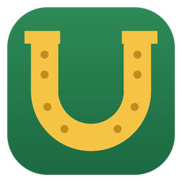

Mount Sheet Sync
A World of Warcraft addon and a small Windows tray program that keep your mount farming list up to date: which bosses each character killed this week, which mounts you already own, and what is still left. The list stays on your computer, or in your own Google Sheet if you want one.
You need both: the addon in the game and the program on Windows. The button downloads the program
(MountSheetSync.exe, one file, Windows 10/11).
How it works
- The addon (World of Warcraft Retail) notes boss kills, your characters and your mount collection in its saved-variables file, and shows the “Remaining” list for the current character in the game.
- The program (Windows 10/11) reads that file and marks kills and collected mounts in your list, on your computer or in your Google Sheet. It also brings the “Remaining” list back to the game.
Two ways to keep your list
You choose in the program's settings. A Google Sheet can later be moved to your computer; copying data from your computer into a new Google Sheet is not available yet.
On this computer (the default)
No Google account and no sign-in. The list is a file in %APPDATA%\MountSheetSync, and the program does not
contact Google. You see everything in the game window and in the tray menu, and new characters are added by themselves.
The file does not move to another computer on its own, so copy the folder now and then to keep a backup.
In a Google Sheet (optional)
A spreadsheet in your own Google Drive, with a sheet per character and skip and farming tips. Open it in a browser and edit it by hand. Only in this mode the program signs in with your Google account, to create and update that spreadsheet. It asks for:
drive.file— access only to the files the program creates itself (the mount spreadsheet). It cannot see or change any other file on your Google Drive.openidandemail— to show in the settings which account is signed in.
Either way the program runs on your computer. There is no server of ours in between, no analytics and no advertising. Details: privacy policy.
Get started
- Addon: install Mount Sheet Sync from CurseForge (or with the CurseForge app).
- Program: download MountSheetSync.exe and run it. If Windows says “Windows protected your PC”, click “More info” → “Run anyway”: the program is free and not code-signed yet, and its full source code is on GitHub.
- It asks to install itself — click “Yes”. It goes to your user folder (no administrator rights), gets a Start menu shortcut and can be removed in Windows Settings → Apps → Installed apps.
- On this computer: this option is already selected in the settings window, so just click “Save”. Log in to the game and go back to character selection: your characters appear by themselves. Then play: kill a boss, go back to character selection, and it is ticked off.
- Google Sheet instead: select “Google Sheet” in the settings window, then “Sign in with Google…” → “Create spreadsheet…” → tick your characters. Then play: kill a boss, go back to character selection, and the row turns “Yes”.
The program updates itself (it asks first). Prefer one archive with everything? The addon, the program, the source
code and a step-by-step guide (in Russian) are in MountSheetSync-<version>.zip on the
GitHub release page.
Questions and bug reports: GitHub Issues. How releases are built and signed: code signing policy.
Mount Sheet Sync — по-русски
Аддон для World of Warcraft и небольшая программа в трее Windows, которые сами ведут ваш список фарма маунтов: каких боссов персонажи убили на этой неделе, какие маунты уже собраны и что осталось. Список хранится на вашем компьютере или, если хотите, в вашей Google-таблице.
Два варианта хранения
Вариант выбирается в настройках программы. Google-таблицу можно потом перенести на компьютер; перенести данные с компьютера в новую Google-таблицу пока нельзя.
На этом компьютере (по умолчанию)
Без аккаунта Google и без входа. Список лежит в файле в папке %APPDATA%\MountSheetSync, к Google программа
не обращается. Всё видно в окне аддона в игре и в меню значка в трее, новые персонажи добавляются сами. На другой
компьютер файл сам не перейдёт, поэтому папку стоит иногда копировать.
В Google-таблице (по желанию)
Таблица на вашем Google Диске: по листу на персонажа, советы по скипам и фарму. Её можно открыть в браузере и
править вручную. Только в этом варианте программа входит в ваш аккаунт Google, чтобы создать таблицу и вести её. Она
просит доступ drive.file — только к файлам, которые создала сама, остальной Диск ей недоступен, — и адрес
почты (openid, email), чтобы показать в настройках, какой аккаунт подключён.
В обоих случаях программа работает на вашем компьютере: наших серверов, аналитики и рекламы нет. Подробнее — в политике конфиденциальности.
Как начать
- Аддон: установите Mount Sheet Sync с CurseForge (или через приложение CurseForge).
- Программа: скачайте MountSheetSync.exe и запустите. Если Windows напишет «Система Windows защитила ваш компьютер» — «Подробнее» → «Выполнить в любом случае»: программа бесплатная и пока без цифровой подписи, весь её код открыт на GitHub.
- Она предложит установиться — нажмите «Да». Программа поставится в папку пользователя (права администратора не нужны), появится в меню «Пуск», а удалить её можно в «Параметрах» Windows → «Приложения» → «Установленные приложения».
- На этом компьютере: этот вариант уже выбран в окне настроек, просто нажмите «Сохранить». Зайдите в игру и выйдите на выбор персонажа: персонажи появятся сами. Дальше просто играйте: убили босса, вышли на выбор персонажа — он отмечен.
- Если нужна Google-таблица: выберите в окне настроек «Таблица Google», затем «Войти через Google…» → «Создать таблицу…» → отметьте персонажей. Дальше просто играйте: убили босса, вышли на выбор персонажа — в строке появилось «Да».
Программа обновляется сама (сначала спросит). Всё одним архивом — аддон, программа, исходный код и подробная
инструкция — MountSheetSync-<версия>.zip на странице выпуска на GitHub.